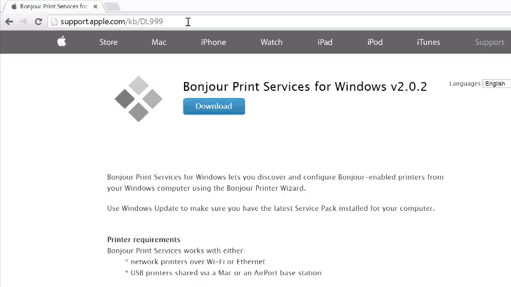
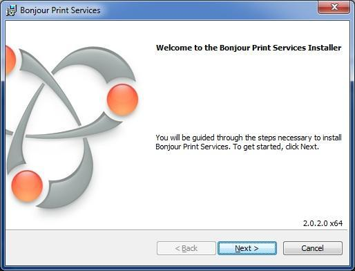

Windows only: Install Bonjour
Bonjour (or zeroconf) is a service that enables the Intel® XDK to auto detect Intel® IoT devices on your network. This service is already available on Mac and Linux; only Windows users need to install an additional Bonjour service.

-
Download Bonjour via Bonjour Print Services for Windows.
-
Click “Download” to download BonjourPSSetup.exe to your computer.
-
Double-click on the downloaded BonjourPSSetup.exe to start the installer.
-
Follow the instructions in the installation wizard.
